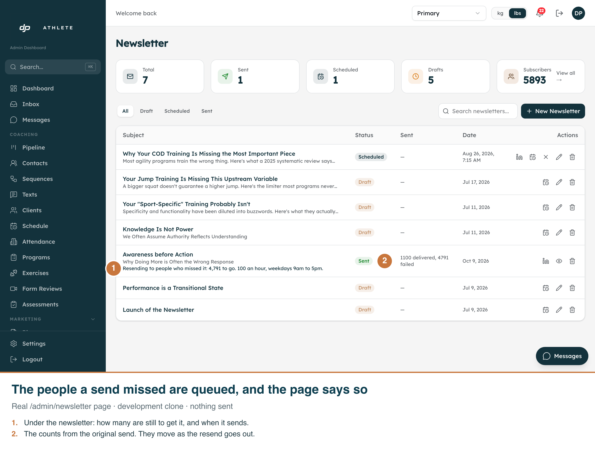
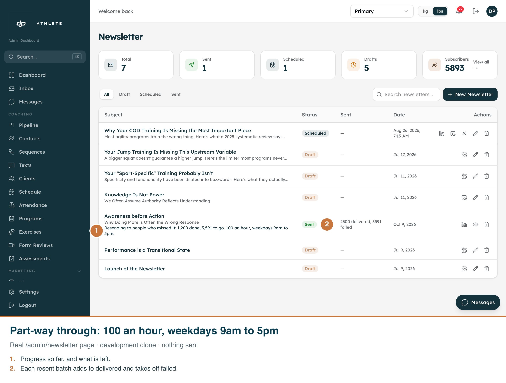
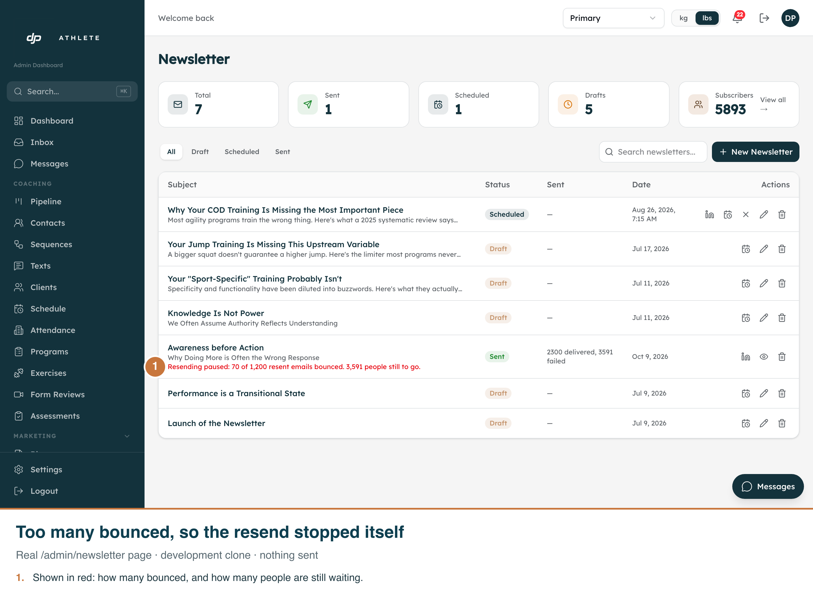

Real page, development clone, 1440 px at 2x. Captured by scripts/capture-newsletter-retry.mjs. No email was sent: the queue was written by scripts/enqueue-newsletter-retry.ts --apply on the clone, and the part-way and paused states were set by SQL. Admin is light-only.


